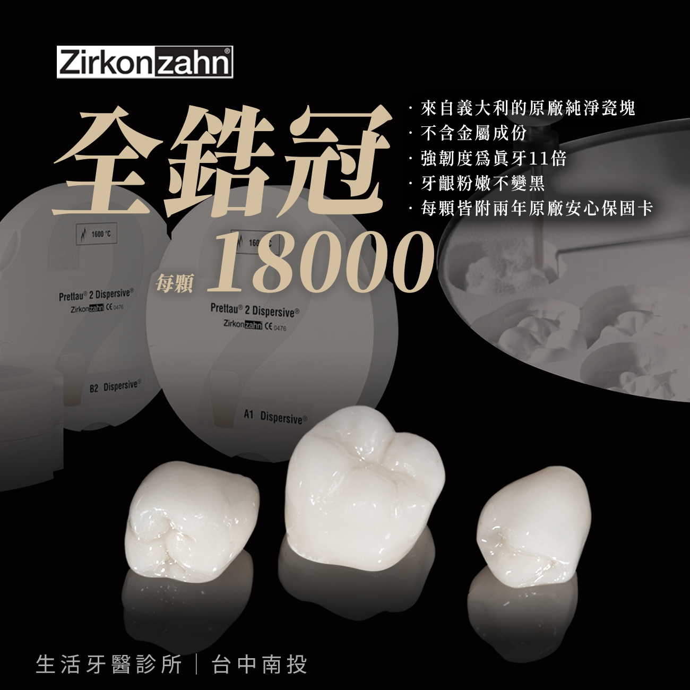
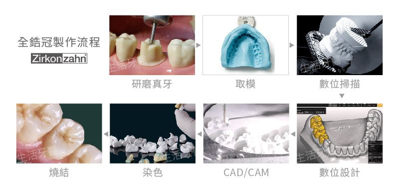

全鋯冠不含金屬，並兼具強度與自然齒色，是後牙假牙冠常見的耐咬材質。除了醫師的修磨、咬合設計與牙體技術師的製作經驗，鋯塊來源及加工系統也會影響修復體品質。
生活牙醫採用義大利 Zirkonzahn 二氧化鋯瓷塊與數位牙技製程，依每位患者的齒質、缺損範圍與咬合條件規劃全鋯冠。
1. Zirkonzahn 是什麼品牌？
Zirkonzahn 是源自義大利的牙科材料與數位牙技系統品牌。品牌創辦人 Enrico Steger 長期投入牙科鋯塊銑削技術，將臨床牙技經驗整合到鋯塊、掃描、設計與 CAD/CAM 加工流程中。
材料與設備採用同一系統，有助牙體技術師依原廠設定掌握設計、切削與燒結條件，降低不同設備及材料交互搭配產生的誤差。

2. 二氧化鋯為什麼適合製作全鋯冠？
二氧化鋯具有高強度、耐磨耗與生物相容性佳等特性。全鋯冠以整塊鋯材製作，不需金屬內冠，也能避免傳統金屬燒瓷冠可能出現的金屬邊緣或外層瓷裂問題。
耐咬與耐磨耗
材料強度適合承受後牙區較大的咬合力量，但仍需由醫師評估咬合與磨牙習慣。
不含金屬
呈現接近自然牙的明亮底色，不會因金屬內冠造成牙齦邊緣的灰黑感。
一體成形
修復體由鋯塊整體切削，可降低外層堆瓷剝落或崩裂的風險。
3. 全鋯冠製作流程
全鋯冠製作先由醫師研磨需要修復的牙齒並取模，再將模型進行數位掃描。牙體技術師依口腔資料進行數位設計，規劃牙冠外型、邊緣與咬合，透過 CAD/CAM 從 Zirkonzahn 鋯塊切削成形，接著完成染色與燒結，最後由醫師試戴並調整密合度與咬合。

4. 全鋯冠適合哪些牙齒位置？
全鋯冠常運用於需要較高咬合強度的後牙、植牙假牙，以及齒質大範圍缺損的牙齒。若是美觀要求較高的前牙區，醫師會依牙齒顏色、透光需求與修復範圍，比較全鋯冠、全瓷冠或陶瓷貼片。
材質並不是越硬越好。若患者有嚴重磨牙、咬合干擾、牙周狀況不穩定或剩餘齒質不足，仍需先處理相關問題，再決定合適的牙冠與設計。
5. 材質與品質如何確認？
選擇全鋯冠時，可確認鋯塊品牌與來源、牙體技術所是否合法、修復體是否有原廠材料證明，以及診所提供的保固與後續追蹤方式。
生活牙醫使用 Zirkonzahn 原廠鋯塊製作全鋯冠，並提供原廠保證卡。實際材質選擇、療程步驟與保固內容，會由醫師依個別口腔狀況於看診時說明。
全鋯冠的長期穩定不只取決於材料強度，也與剩餘齒質、牙周健康、邊緣密合、咬合設計及日常清潔有關。完成療程後仍需定期回診檢查。